Production storyboard · IBM SevOne · Continuous network assurance in the age of agentic AI · 11:06 · 1920×1080 · narrated and subtitled
Single message: AI agents accelerate change. SevOne provides the independent network observability needed to understand the impact, detect unintended consequences and verify operational outcomes.
Anchor line: “The AI agent tells you the task was completed. The automation platform tells you the change was applied. SevOne tells you what happened to the network. The business needs all three.”
Guardrails: all values are demo values; gNMI is Public Preview; SevOne observes and provides evidence — it does not execute remediation, govern AI agents, or act as a rail-safety or OT-safety system; no invented ROI.
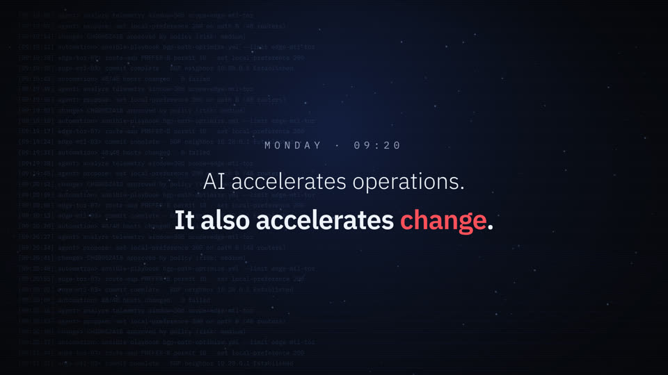
Black open. Faint scrolling agent and automation logs behind a centred clock “MONDAY · 09:20”. Typewriter line, then a punch line in red.
Nine twenty, Monday morning.
AI accelerates operations. It also accelerates change.
And change now happens at machine speed.
Sub drone and single bass impact; typewriter ticks; tension pad enters.
0:00 impact (1)
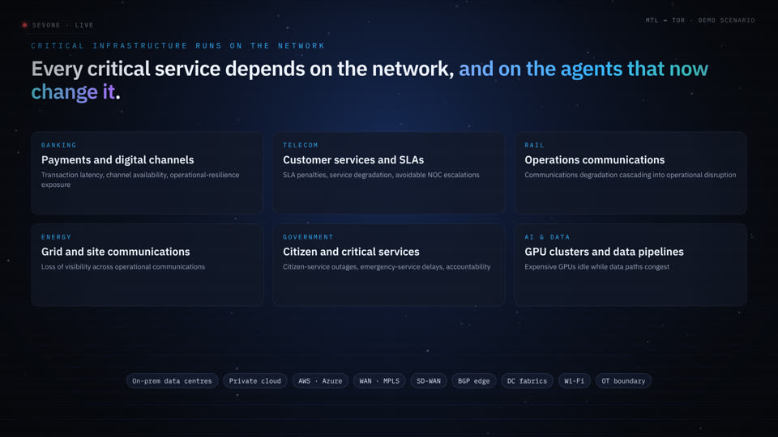
Six industry tiles fill in (banking, telecom, rail, energy, government, AI & data), then a row of environment chips: on-prem DCs, private cloud, AWS · Azure, WAN · MPLS, SD-WAN, BGP edge, DC fabrics, Wi-Fi, OT boundary.
Banks, telecom operators, railways, energy utilities, governments and AI platforms all run on the network.
On premises and in the cloud, across WAN, SD-WAN and data centers.
AI agents now help engineers troubleshoot, generate configurations and execute changes across that infrastructure.
That creates enormous opportunity, and a new operational risk.
Pulse bass starts (96 BPM); pad opens up.
0:12 impact (0.45)
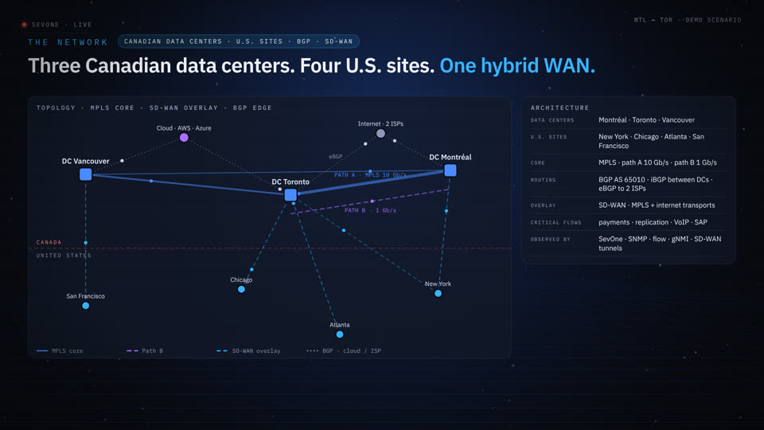
Topology draws in layers: MPLS core between DC Vancouver, DC Toronto and DC Montréal (path A 10 Gb/s; path B 1 Gb/s drawn parallel in purple), then the SD-WAN overlay to San Francisco, Chicago, Atlanta and New York, then BGP links to cloud and two ISPs. A dashed Canada / United States line separates the DCs from the U.S. sites. An architecture panel lists DCs, sites, core, routing, overlay, critical flows and what SevOne observes.
Here is the network. Data centers in Montreal, Toronto and Vancouver, joined by an MPLS core.
Path A, ten gigabits, carries payments and replication between Toronto and Montreal. Path B, one gigabit, is the backup.
New York, Chicago, Atlanta and San Francisco connect over SD-WAN, with BGP to the cloud.
SevOne sees all of it.
Pulse continues; soft blips as architecture rows appear.
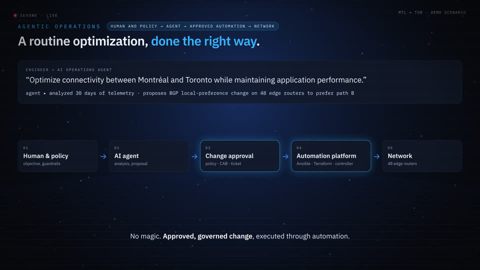
Engineer prompt card; the agent’s proposal types in. A five-step control chain lights up in sequence: Human & policy → AI agent → Change approval → Automation platform → Network (48 edge routers).
Consider a routine optimization.
An engineer asks an AI agent to improve connectivity between Montreal and Toronto, without hurting application performance.
The agent analyzes telemetry, and proposes a BGP preference change on forty-eight edge routers.
Following change policy, the change is approved, and executed through the automation platform.
Human and policy, then agent, then approved automation. Exactly as it should be.
Kick drum enters; light hi-hats for a “systems” feel.
1:08 impact (0.45)
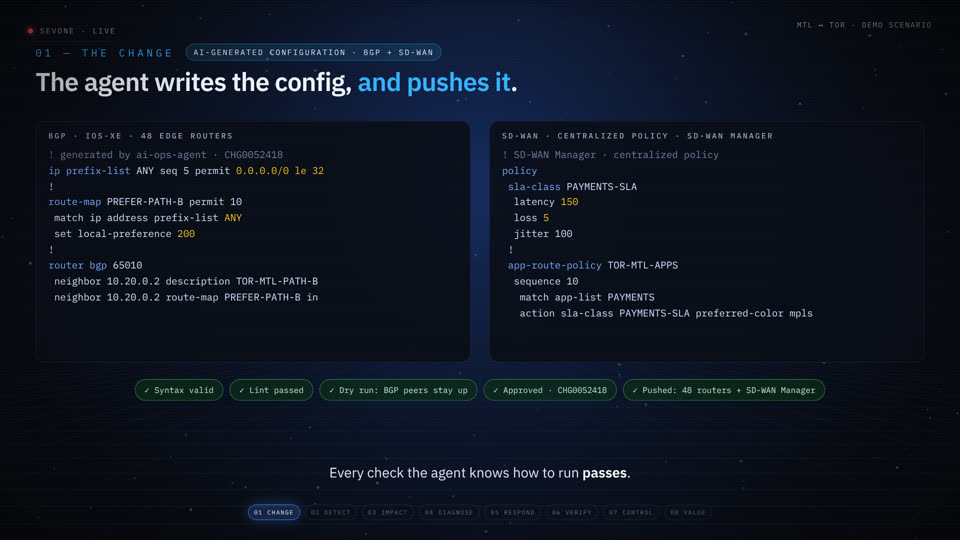
Two code panels type in line by line: the BGP configuration (prefix-list ANY 0.0.0.0/0 le 32, route-map PREFER-PATH-B setting local-preference 200, applied inbound on the TOR–MTL path B neighbour) and the SD-WAN centralized policy (sla-class PAYMENTS-SLA with latency 150, loss 5; app-route-policy steering PAYMENTS). Five green validation chips follow: syntax, lint, dry run, approval, pushed.
The agent writes the configuration itself.
A BGP route-map that raises local preference on path B.
And an SD-WAN policy, with an SLA class for payment traffic.
The syntax validates. The BGP peers stay up. The change passes approval.
It is pushed to forty-eight routers, and to the SD-WAN manager.
Every check the agent knows how to run, passes.
Typing blips per code line; impact on scene start.
1:40 impact (0.45)
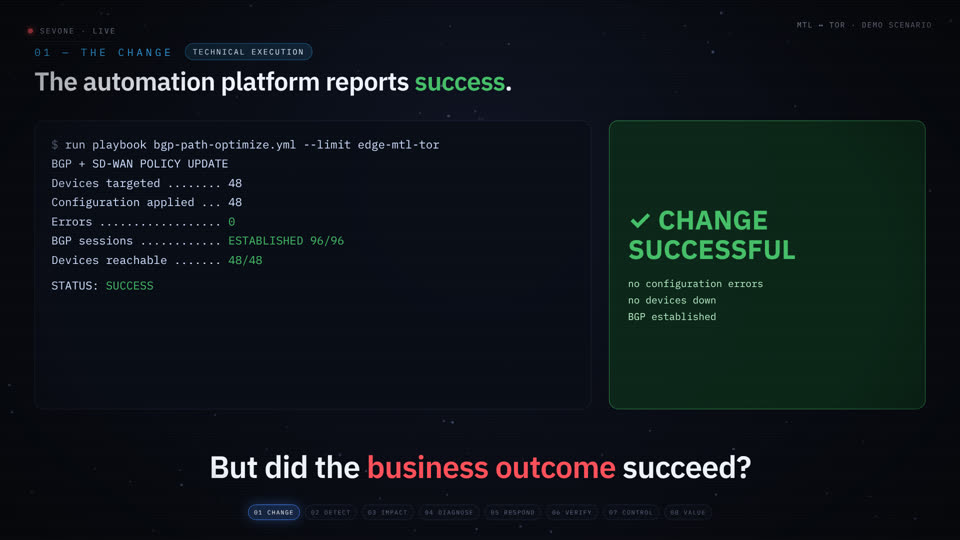
Automation console prints the playbook run line by line: 48 targeted, 48 applied, 0 errors, BGP 96/96 established. A green “CHANGE SUCCESSFUL” card pops. Hold, then the question lands in red.
Forty-eight devices are updated.
No configuration errors. No devices down. BGP sessions remain established.
The automation platform reports success.
But did the business outcome succeed?
Console blips per line; riser into a hard stop; big impact on the question with music drop-out (0:96).
2:14 impact (0.45)
2:35 riser 3 s
2:38 impact (1.1)
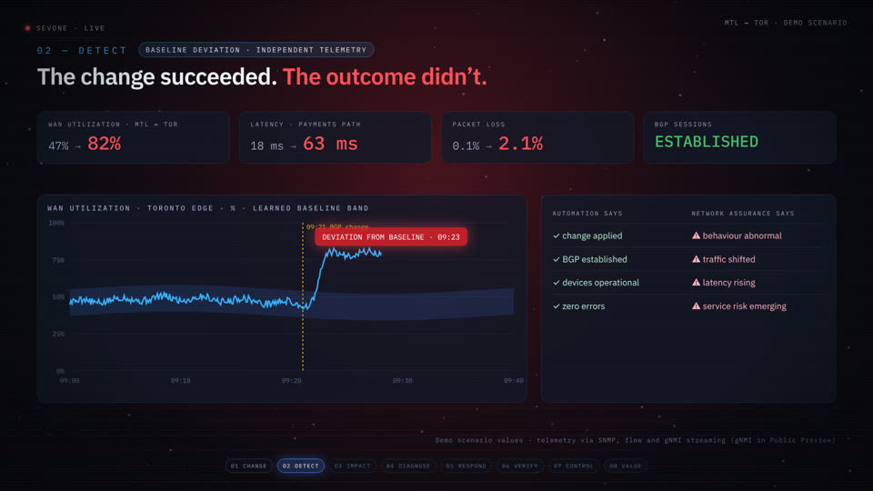
Switch to SevOne. Utilization chart draws against the learned baseline band; a red “DEVIATION FROM BASELINE · 09:23” tag pops. KPI tiles count up: 47→82 %, 18→63 ms, 0.1→2.1 %; BGP still ESTABLISHED. Split table: Automation says ✓ vs Network assurance says ⚠.
Independent network telemetry tells a different story.
Traffic has shifted onto a more constrained path.
WAN utilization climbs from forty-seven to eighty-two percent. Latency, from eighteen to sixty-three milliseconds. Packet loss reaches two percent.
Yet BGP is still established, and every device is still up.
SevOne compares live behavior with each path's learned baseline, and flags the deviation within minutes.
This is the critical distinction. Technical success does not guarantee business success.
Alarm tone and impact at the deviation; red tint; heavier kick.
2:42 impact (0.5)
2:49 riser 2.5 s
2:52 impact (1)
2:52 alarm tone
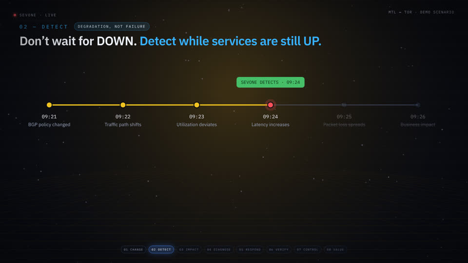
Horizontal timeline 09:21 → 09:26. The yellow progress bar stops at 09:24 where a green “SEVONE DETECTS · 09:24” badge appears; 09:25 and 09:26 grey out and are struck through. Four evidence tiles: baselines, flow, telemetry, synthetics.
This is where observability changes the risk equation.
Baselines, flow records and streaming telemetry show the degradation while services are still up.
SevOne raises the condition at nine twenty-four, before packet loss spreads, and before any customer calls.
Don't wait for down. Detect degradation while services are still up.
Amber tint; music steadies; riser into the industries section.
3:27 impact (0.45)
3:54 riser 3 s
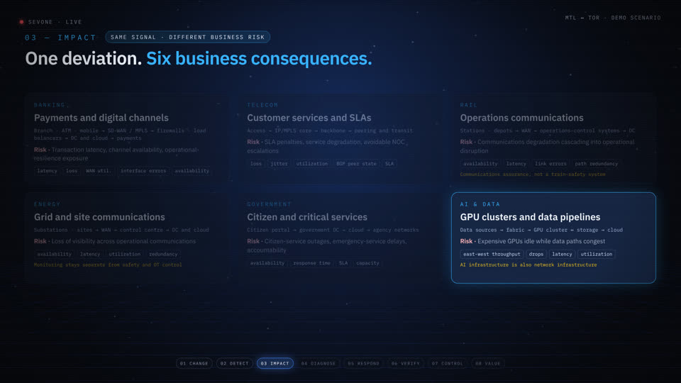
Six industry cards (3 × 2). Each card in turn brightens with a cyan border while the narrator covers it: architecture path, risk, KPI chips, and a guardrail note for rail, energy and AI.
For a bank, the same deviation becomes transaction latency, and operational-resilience exposure.
For a telecom operator, it means SLA penalties, and avoidable NOC escalations.
For rail, communications visibility keeps degradation from cascading into operational disruption.
For energy, visibility across operational communications stays separate from safety and control systems.
For government and critical services, it is evidence for availability and accountability.
And for AI platforms, congested data paths leave expensive GPUs waiting. AI infrastructure is network infrastructure.
Full arrangement; soft blip as each card activates.
3:54 riser 3 s
3:57 impact (0.8)
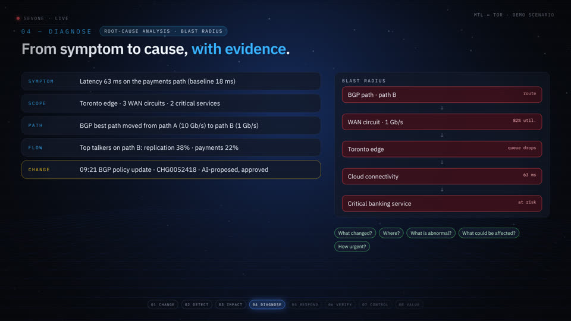
Five RCA rows slide in (symptom → scope → path → flow → change). On the right, the blast-radius stack turns red from the BGP path down to the critical banking service; five question chips turn green.
Next question: what exactly happened, and where?
SevOne moves from the symptom, to the scope, to the path, to the flows, and back to the change that caused it.
Latency on the payments path. Three WAN circuits at the Toronto edge. The BGP best path moved to a one-gigabit circuit.
Replication and payment flows now share it. The trigger: the nine twenty-one policy change.
What changed, where, what is abnormal, what could be affected, and how urgent. Answered with evidence, not opinion.
Steady pulse; no impacts, to keep focus on the narration.
4:57 impact (0.45)
5:39 riser 3 s
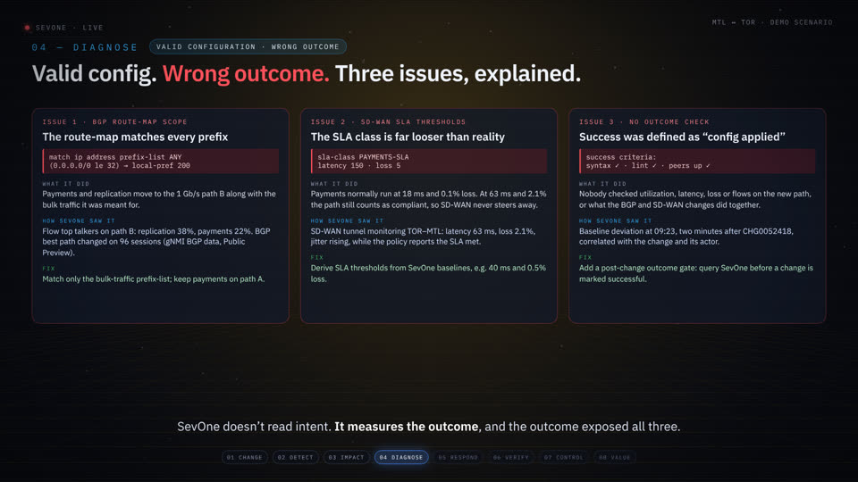
Three issue cards build left to right, each with the offending config line in red, what it did, how SevOne saw it, and the fix: (1) route-map scope matches every prefix; (2) SD-WAN SLA class thresholds far looser than the payments baseline; (3) success defined as “config applied”, no outcome check.
So what went wrong? Three issues, each one valid on its own.
One: the route-map matches every prefix, not just bulk traffic. Payments and replication all move to the one-gigabit path.
Two: the SD-WAN SLA class allows a hundred and fifty milliseconds and five percent loss. The degraded path still looks compliant, so nothing is steered away.
Three: each change was checked for syntax. None was checked against the outcome.
SevOne exposed all three: the flows on path B, SD-WAN tunnel latency and loss, and the baseline deviation minutes after the change.
Riser into an impact; amber tint; blip per card.
5:39 riser 3 s
5:42 impact (0.7)
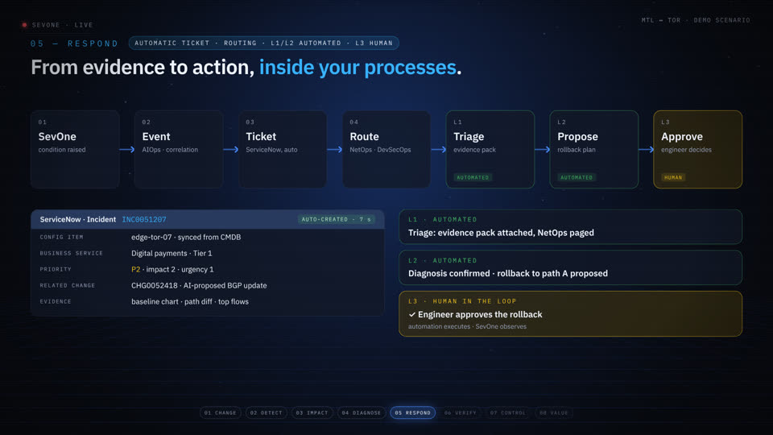
Seven-stage pipeline with a travelling pulse: SevOne → Event → Ticket → Route → L1 (auto) → L2 (auto) → L3 (human). A ServiceNow incident card fills in (CI from CMDB, P2, related change, evidence). L1/L2/L3 cards stack on the right, ending with the engineer’s approval.
Detection alone doesn't reduce risk. The insight has to enter your existing processes.
SevOne raises the event. A ServiceNow incident opens automatically, with the configuration item, the priority and the evidence.
NetOps is paged. DevSecOps is informed of the AI-initiated change.
Levels one and two are automated: triage, correlation, and a rollback proposal.
Level three is human. An engineer approves the rollback.
The automation platform executes it. SevOne remains the independent observer.
Soft chime when the ticket is created.
6:26 impact (0.45)
6:47 chime
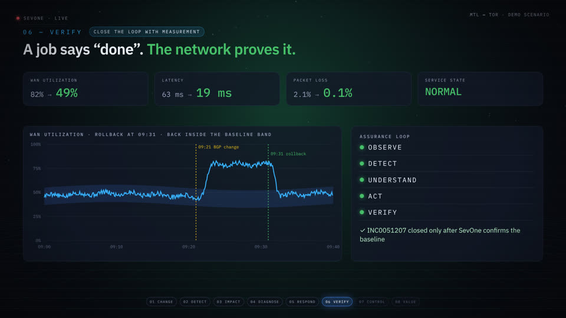
Tiles count back down (82→49 %, 63→19 ms, 2.1→0.1 %), service NORMAL. Chart redraws with the 09:31 rollback back inside the baseline band. The assurance loop lights OBSERVE → DETECT → UNDERSTAND → ACT → VERIFY.
And remediation isn't complete because a job reports success. The network is measured again.
Utilization returns to forty-nine percent. Latency to nineteen milliseconds. Packet loss disappears.
Only then does the ticket close. Observe, detect, understand, act, and verify.
Resolution chime; green tint.
7:11 impact (0.6)
7:19 chime
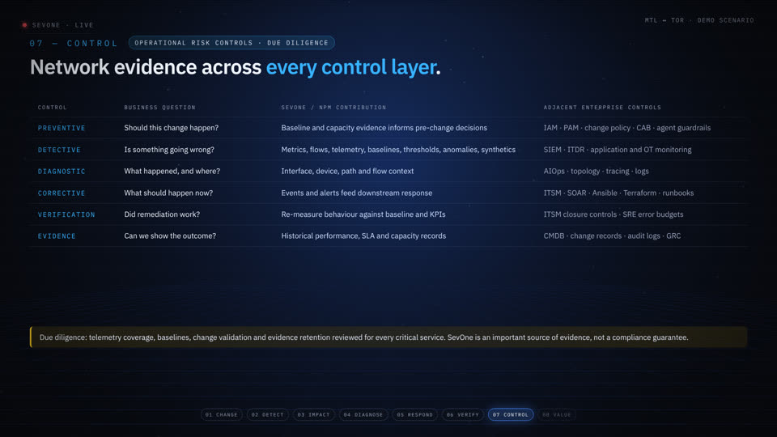
Six-row control table builds row by row: preventive, detective, diagnostic, corrective, verification, evidence; columns for business question, SevOne contribution and adjacent enterprise controls. Due-diligence note at the bottom.
This is how network evidence supports enterprise risk controls.
Preventive controls govern what can change. Detective controls surface abnormal behavior.
Diagnostic evidence explains it. Corrective workflows respond. Verification confirms recovery.
And the history becomes evidence for audit, regulators, and due diligence.
SevOne is an important source of that evidence, alongside change, ITSM and security records.
It doesn't replace those controls. It makes them measurable.
Row blips; even, confident pulse.
7:41 impact (0.45)
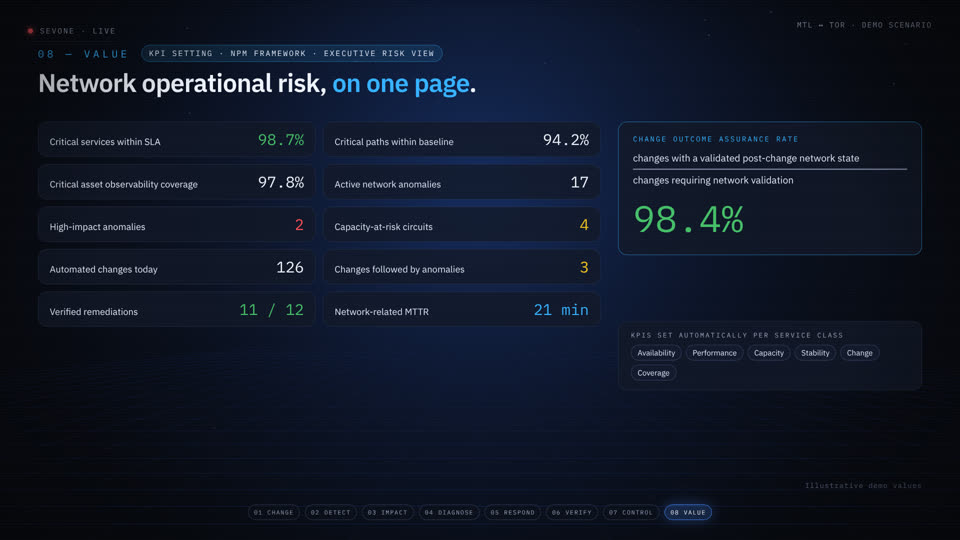
Ten executive KPI tiles (demo values) and the change outcome assurance rate formula counting to 98.4 %. Chips show KPI families set per service class.
Executives get one view of network operational risk.
KPIs are set per service class: availability, performance, capacity, stability, change and coverage.
And one new metric for the agentic era: the change outcome assurance rate.
The share of changes whose network outcome was actually verified.
Pulse continues; slight lift.
8:21 impact (0.45)
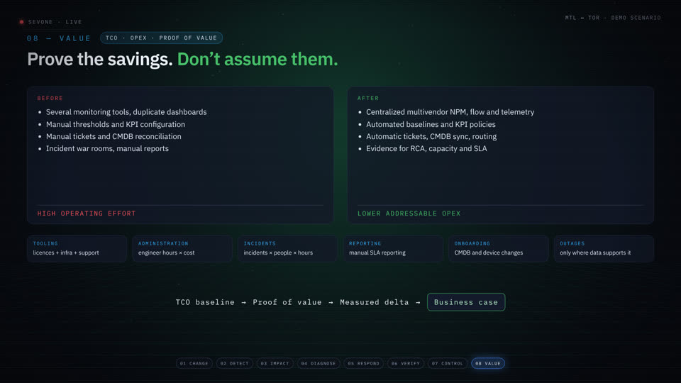
Before vs After columns, six cost-pool tiles, then a flow: TCO baseline → Proof of value → Measured delta → Business case (green).
The business case goes beyond avoided outages.
Consolidated tools, automated baselines, automatic tickets and CMDB sync reduce the effort behind every incident.
But don't estimate savings from marketing assumptions.
Baseline today's tooling, administration, incident, reporting and onboarding costs.
Run a proof of value, measure the delta, and build the business case from evidence.
That is how you prove lower TCO and OPEX.
Green tint; music begins to resolve.
8:51 impact (0.45)
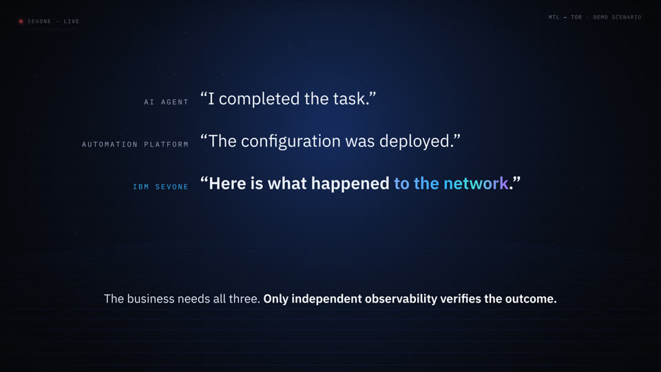
Three statements appear one by one, attributed to the AI agent, the automation platform and IBM SevOne, then the conclusion.
The AI agent tells you the task was completed.
The automation platform tells you the change was applied.
SevOne tells you what happened to the network.
The business needs all three. Only independent observability verifies the outcome.
Music thins out; riser into the question.
9:36 impact (0.6)
9:55 riser 3 s
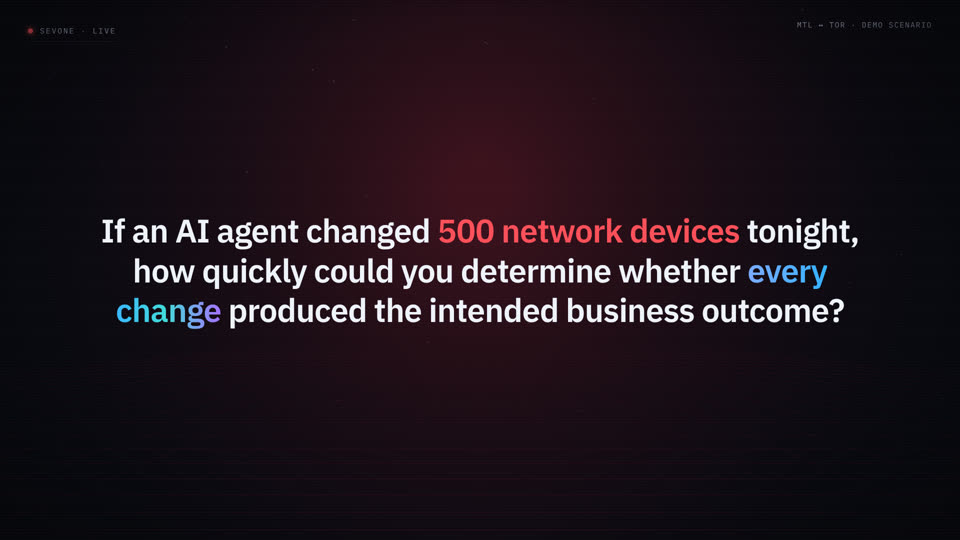
Full-screen question on a red-tinted background, held for the whole scene.
If an AI agent changed five hundred network devices tonight, how quickly could you determine whether every change produced the intended business outcome?
Biggest impact of the film, then near silence: drone only.
9:55 riser 3 s
9:58 impact (1.2)
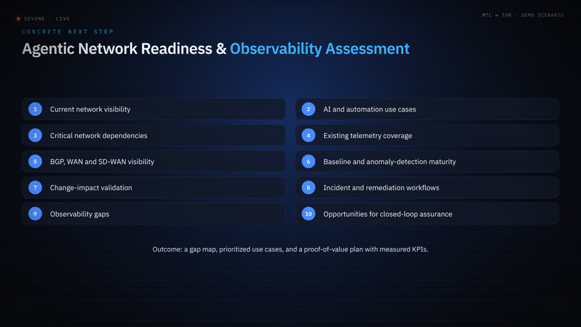
Title, then ten numbered assessment items appear two by two; outcome line at the bottom.
Start with an Agentic Network Readiness and Observability Assessment.
Visibility, AI use cases, critical dependencies, telemetry coverage, and BGP and WAN visibility.
Baselines, change-impact validation, incident workflows, observability gaps, and closed-loop assurance.
Pulse returns softly; blip per item.
10:18 impact (0.6)
10:43 riser 3 s
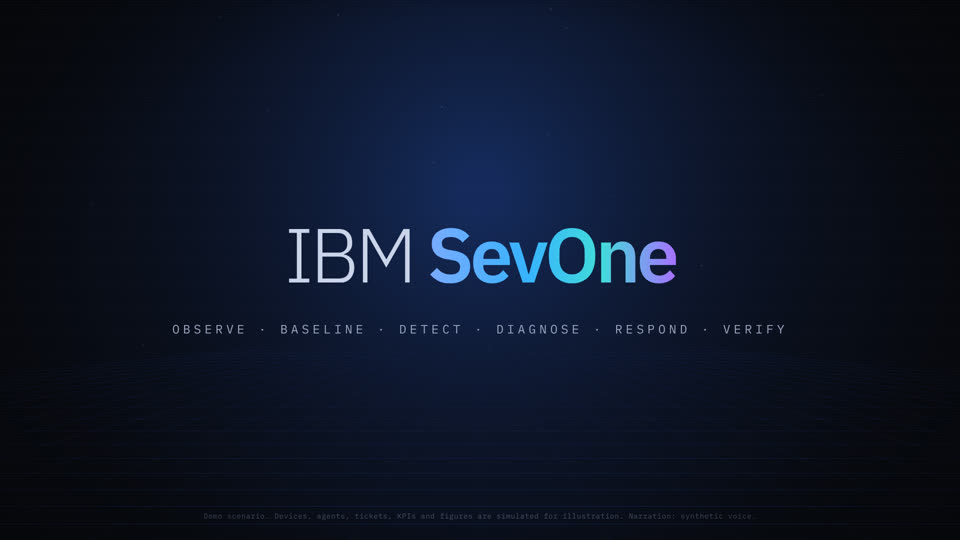
Closing lines build one per beat, then clear to the IBM SevOne brand reveal and tagline; disclaimer at the bottom; fade to black.
In the age of agentic AI, autonomy without observability is risk.
The future isn't just autonomous networking.
It's autonomous networking, with continuous assurance.
IBM SevOne.
Riser, brand-reveal impact, sustained final chord, fade out.
10:43 riser 3 s
10:46 impact (0.8)
10:54 riser 3 s
10:57 impact (1.2)
Architecture: Branch · mobile · ATM → SD-WAN / MPLS / internet → firewalls, load balancers → core DC, mainframe → hybrid cloud, payments
Principal risk: A routing, capacity or connectivity change degrades payments or digital banking while the network is technically “up”.
| Preventive | Change policy plus capacity and SLA assessment |
|---|---|
| Detective | Behavioural baselines: latency, loss, jitter, utilization |
| Corrective | ITSM incident → approved network workflow (reroute, rollback) |
| Verification | Post-change KPIs compared with baseline |
| Evidence | Performance, change and incident records for operational-risk review |
KPIs: Availability, transaction-path latency, site-to-DC latency, loss, jitter, BGP peers, interface errors, SD-WAN tunnels, QoS, circuit capacity
Executive KRI: % of critical paths outside approved baseline; % of high-risk changes followed by abnormal behaviour within 30 min
Architecture: Access / 5G / broadband → aggregation → IP/MPLS → backbone → peering and transit → service platforms
Principal risk: Customer-service degradation, oversubscribed links, peering instability, SLA breach, capacity exhaustion.
| Preventive | Capacity forecasts, SLA engineering, path validation |
|---|---|
| Detective | BGP, loss, latency, jitter, utilization, flows |
| Corrective | NOC incident and controlled traffic engineering |
| Verification | Utilization, loss and latency verified after remediation |
| Evidence | SLA and historical performance evidence |
KPIs: Availability, BGP stability, latency, loss, jitter, utilization, errors, traffic volume, QoS, capacity headroom, SLA compliance
Executive KRI: Capacity-at-risk: critical links forecast to exceed the engineering threshold in the planning horizon
Architecture: Stations → IP/MPLS / WAN → communications network → operational applications → DC / cloud
Principal risk: Communications degradation compounding an operational disruption. (SevOne is network assurance, not signalling or train-control safety.)
| Preventive | Capacity and change assessment for operational communications |
|---|---|
| Detective | WAN loss, latency, jitter, interface degradation |
| Corrective | NOC incident → approved network remediation |
| Verification | Communications-path recovery validated |
| Evidence | Network availability and performance history |
KPIs: Station connectivity, WAN availability, MPLS path health, latency, loss, interface errors, circuit utilization, redundant-path health
Executive KRI: Critical communications paths outside baseline
Architecture: Enterprise IT → network boundary → OT communications → sites, substations, plants
Principal risk: Loss of visibility across operational communications. (Not a replacement for protection relays, SCADA safety controls or OT-security platforms.)
| Preventive | Approved network changes, capacity and path planning |
|---|---|
| Detective | Availability, latency, loss, interface anomalies |
| Corrective | Controlled NOC / operations escalation |
| Verification | Network recovery confirmed after remediation |
| Evidence | Network service and SLA history |
KPIs: Control-site connectivity, communications-path availability, redundant-path status, WAN/MPLS latency, loss, capacity, route stability
Executive KRI: Critical communications links outside normal baseline
Architecture: Citizen services → agencies, campuses, remote offices → DC → hybrid cloud
Principal risk: Critical-service availability, digital-service disruption, remote-site failure, cloud connectivity, accountability.
| Preventive | Change windows, architecture standards, capacity assessment |
|---|---|
| Detective | Network, SLA and baseline monitoring |
| Corrective | Automated incident routing and controlled response |
| Verification | Service and network recovery confirmation |
| Evidence | Historical SLA and performance evidence |
KPIs: Latency, loss, availability, capacity, interface health, routing; MTTD, MTTA, MTTR; recurring incidents
Executive KRI: Network observability coverage = critical assets monitored ÷ critical assets in scope
Architecture: Data sources → network fabric → storage + GPUs → AI platform → model and inference services
Principal risk: Congestion starving GPU and data workloads; expensive compute waiting on data; change-induced degradation.
| Preventive | Capacity and network architecture planning |
|---|---|
| Detective | Fabric utilization, loss, latency, flow anomalies |
| Corrective | Incident and automation workflow |
| Verification | Traffic and performance normalization confirmed |
| Evidence | Historical network-performance correlation |
KPIs: Fabric utilization, loss, latency, saturation, throughput, east-west traffic, storage-network throughput, cloud connectivity, headroom
Executive KRI: Idle compute attributable to network constraints
Availability · Performance · Traffic · Capacity · Service quality · Change and coverage. Change outcome assurance rate = validated post-change states ÷ changes requiring validation × 100. Network observability coverage = critical assets monitored ÷ critical assets in scope × 100.
Detect (SevOne) → ServiceNow incident with CMDB CI and evidence → route to NetOps / DevSecOps → L1 triage (automated) → L2 diagnosis and rollback proposal (automated) → L3 approval by a named engineer (human) → automation executes → SevOne verifies against baseline → ticket closes.
Baseline six cost pools — tooling, administration, incident investigation, reporting/SLA, CMDB onboarding, avoidable outage cost (only with customer data) — run a proof of value, measure the delta, build the business case. No unvalidated percentages.
| Time (min) | Topic | Purpose |
|---|---|---|
| 0–5 | The Network Is Becoming Agentic | Establish urgency |
| 5–12 | When AI Operates at Machine Speed | Introduce business risk |
| 12–19 | Why Traditional Monitoring Isn’t Enough | Establish need for assurance |
| 19–27 | SevOne 9.0 Observability Foundation | Introduce technology |
| 27–35 | Agentic Network Assurance | Observe, baseline, detect, anticipate |
| 35–47 | Live BGP Agentic AI Scenario | Prove value (play this film, then go live) |
| 47–52 | Three Control Planes | Establish architecture and boundaries |
| 52–55 | Closed-Loop Network Assurance | Show future operating model |
| 55–58 | Business Value | Translate technical capabilities into outcomes |
| 58–60 | Call to Action | Drive assessment / PoV |
Closing line: “In the age of Agentic AI, autonomy without observability is risk. The future isn’t just autonomous networking. It’s autonomous networking with continuous assurance.”